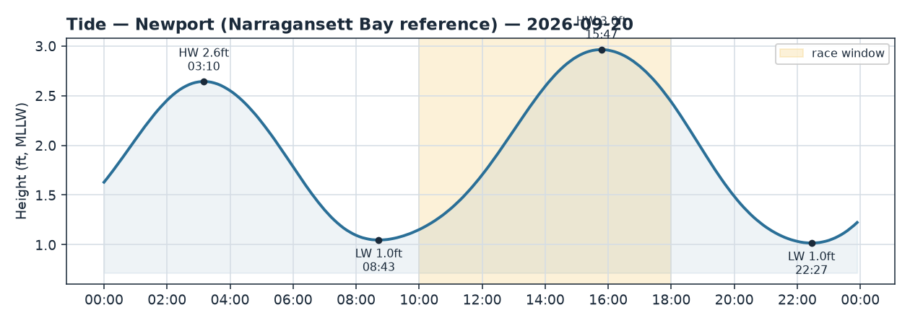
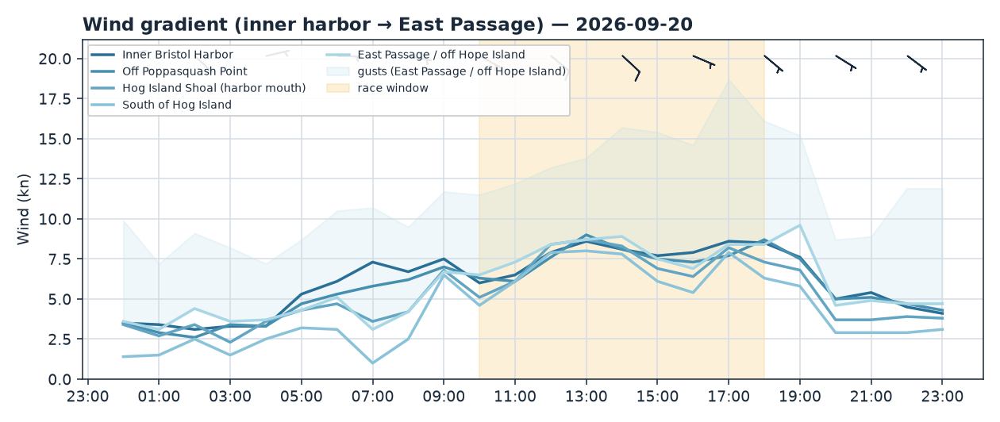
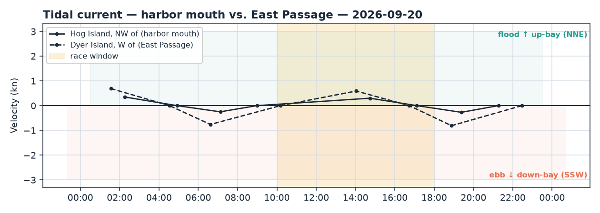

Bristol Harbor · Rhode Island
Sun 20 Sep 2026 · Daysail
Steady SE breeze makes for a fun sail — but pack the foulies, rain's the story all day.
The day
There's a genuinely nice little breeze on tap — a steady southeasterly in the 7–9 kt range with the occasional mid-teens puff, which is honestly a lovely daysailing wind. The catch is the sky: rain is likely to outright expected most of the day, with temps only in the low 60s. So call this one marginal — not because of the wind, but because of the wet and the chill. If you don't mind sailing in the rain and dress for it, you'll get a satisfying spirited sail. If you're after a dry, sunny cruise, this isn't your day.
Wind
Expect a southeasterly around 7–9 kt through the window, easing gently clockwise (a touch more southerly) as the day goes on. That's a comfortable, powered-up-but-manageable strength for most boats — no reef needed, but enough to keep things lively. The live anemometers are already backing this up: Conimicut up the bay is reading 9–11 kt and Newport at the Passage mouth around 8, both a bit stronger than the models guessed, so lean toward the breezier picture. Pressure is fairly even everywhere, with maybe a hair more out toward the East Passage and a slightly softer patch just south of Hog Island. With the wind out of the southeast, the calm spot to expect is tucked in close under the eastern Bristol waterfront — if you sail into a hole, nose back out toward open water and you'll find the breeze again. Best window is really anytime you're willing to be out; the wind is consistent all afternoon.
Tide & current
Low water was early (08:43, about 1 ft) and the tide floods and rises all afternoon to a high around 15:47 (nearly 3 ft) — so no shallow-edge worries during your sail, water's coming in the whole time. Current at the harbor mouth is gentle: slack around 09:00, then a mild flood setting up-bay (into the harbor) peaking early afternoon, easing to slack near 17:00. Out in the East Passage the flow is a bit livelier (up to ~0.6–0.8 kt), running up-bay through the afternoon. With a southeast wind against that up-bay flood you may notice a little short chop out toward the harbor mouth and the Passage — nothing dramatic, just don't be surprised by a bumpier ride once you poke your bow out past Hog Island.
Good to know
Dress for cool and wet: low-60s air and rain likely to steady — foul-weather gear, layers, and a warm hat will make or break the day. Watch for heavier downpours cutting visibility, and if a squally puff comes through with the rain you'll be glad of a life jacket on everyone, since it can gust into the mid-to-high teens near the harbor mouth. If you go, an early-afternoon slot lets you ride the building water and steady breeze; aim to be back on the mooring by mid-to-late afternoon before the light fades and the rain settles in. Keep an eye on the sky — if you hear thunder, get in.


